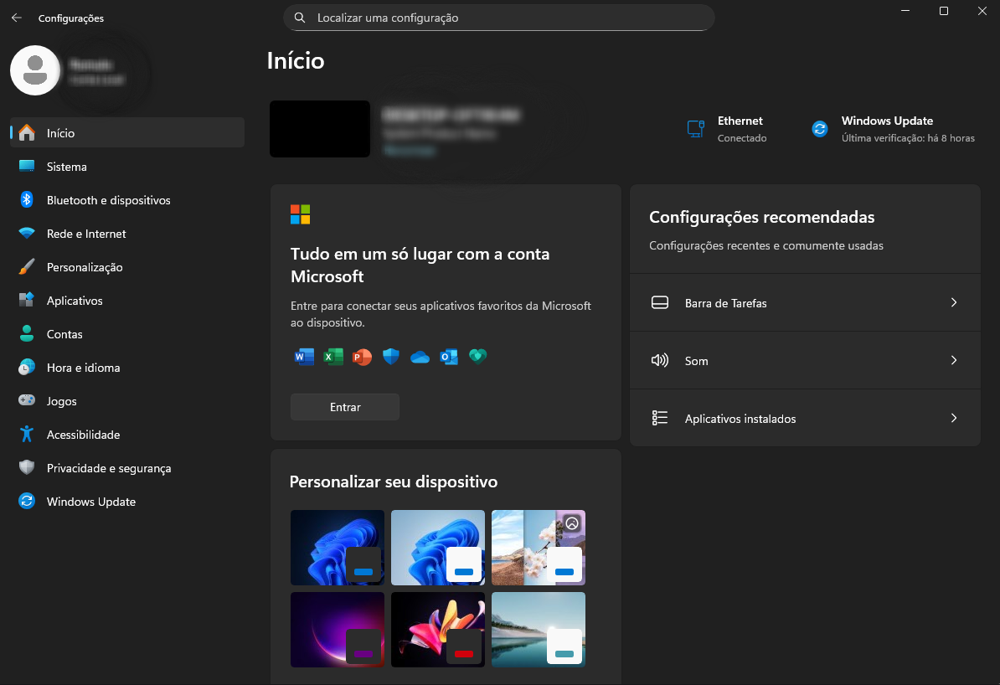
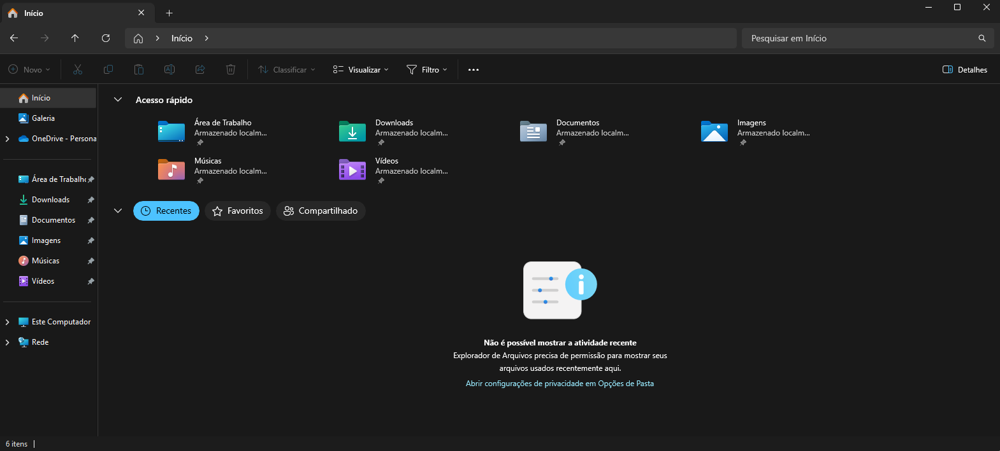
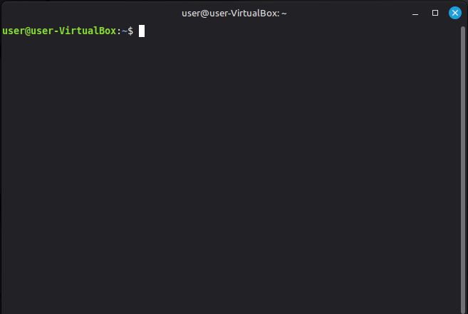

Sistemas operacionais

Neste tópico, vamos abordar o tema dos sistemas operacionais, entendendo o que são, quais são
suas principais
funções e como eles influenciam a experiência do usuário. Também exploraremos brevemente o Windows
11 e a
distribuição Linux Mint, conhecendo alguns conceitos básicos sobre esses dois exemplos de
sistemas operacionais.
O sistema operacional (SO) é o software fundamental que atua como a camada intermediária entre o hardware e o
usuário. Sem ele, seria extremamente difícil utilizar um computador, já que cada ação teria que ser controlada
diretamente por comandos complexos de máquina.
Entre suas principais funções estão:
Gerenciamento de processos: controla a execução de programas e aplicativos, permitindo que
múltiplas tarefas sejam
realizadas ao mesmo tempo.
Gerenciamento de memória: organiza como a memória RAM é utilizada pelos programas, garantindo
desempenho e
estabilidade.
Gerenciamento de arquivos: permite criar, salvar, organizar e acessar pastas e documentos em
dispositivos de
armazenamento (HDs, SSDs, pendrives etc.).
Gerenciamento de dispositivos de entrada e saída: controla a comunicação entre periféricos
(teclado, mouse,
impressora, monitor etc.) e o sistema.
Segurança e controle de acesso: protege os dados e restringe permissões de uso, garantindo maior
privacidade e
estabilidade.
Interface com o usuário: pode ser gráfica (GUI), com janelas, ícones e menus, ou baseada em linha
de comando
(CLI), como no terminal do Linux.
Em resumo, o sistema operacional organiza, coordena e otimiza o funcionamento de todo o computador, transformando
instruções complexas em interações simples e acessíveis.
Principais Sistemas Operacionais
Windows
Desenvolvido pela Microsoft, é o sistema operacional mais popular em computadores pessoais (PCs) no mundo. Com uma interface amigável e ampla compatibilidade de softwares e hardwares, é muito utilizado tanto para uso doméstico quanto empresarial. As versões mais recentes são o Windows 10 e o Windows 11, que trouxeram melhorias em desempenho, segurança, design e integração com serviços em nuvem, como o OneDrive e o Microsoft 365.

macOS
Criado pela Apple, é o sistema operacional exclusivo para os computadores Mac. É reconhecido por sua interface moderna, elegante e intuitiva, além da alta estabilidade e integração com o ecossistema da Apple, como iPhone, iPad e Apple Watch. O macOS também é muito utilizado em áreas criativas, como design gráfico, edição de vídeo e produção musical, devido ao seu desempenho otimizado para softwares profissionais.

Linux
Um sistema operacional de código aberto (open source), o que significa que qualquer
pessoa pode visualizar,
modificar e redistribuir seu código-fonte. É muito popular entre desenvolvedores, administradores de servidores
e entusiastas de tecnologia. Existem diversas distribuições (ou “distros”) de Linux, como Ubuntu, Fedora e
Debian, cada uma com suas particularidades e públicos-alvo. O Linux é altamente valorizado por sua segurança,
flexibilidade e estabilidade, sendo amplamente usado em servidores, supercomputadores e até em sistemas
embarcados.
Nota: Código aberto (ou open source) refere-se a softwares cujo código-fonte está disponível
para qualquer
pessoa, permitindo transparência, colaboração e constante evolução da tecnologia.

Android
Desenvolvido pelo Google, é o sistema operacional mais utilizado no mundo, presente em bilhões de dispositivos móveis. Também é baseado em código aberto, permitindo que diferentes fabricantes (Samsung, Xiaomi, Motorola, entre outros) personalizem o sistema de acordo com seus aparelhos. O Android se destaca pela grande flexibilidade, variedade de aplicativos na Play Store e possibilidades de personalização. Além de smartphones, também é encontrado em tablets, smart TVs, relógios inteligentes e até automóveis.

iOS
O sistema operacional móvel da Apple, exclusivo para os iPhones (e baseado no macOS). É conhecido por seu alto nível de segurança, desempenho estável e integração perfeita com outros dispositivos Apple, como MacBooks, iPads e Apple Watch. Apesar de ser um sistema fechado (não permite personalizações profundas como o Android), o iOS é amplamente reconhecido pela experiência de usuário consistente e otimizada, além da App Store, que oferece aplicativos com forte controle de qualidade.
Windows 11
Com o fim do suporte ao Windows 10 anunciado pela Microsoft para outubro de 2025, o
Windows 11 tem conquistado cada vez mais usuários em todo o mundo. A migração ocorre tanto por questões de
segurança quanto pela busca por recursos mais modernos e melhor desempenho. Essa tendência fez com que o Windows
11 ultrapassasse seu antecessor e se tornasse a versão mais utilizada globalmente.
Em agosto de 2025, a participação de mercado global das versões do Windows para desktop foi a seguinte:
- Windows 11: 49,02%
- Windows 10: 45,65%
- Windows 7: 3,54%
- Windows 8: 1,13%
- Windows XP: 0,38%
- Windows 8.1: 0,23%
Fonte: Desktop Windows Version
Agora, vamos explorar algumas de suas principais ferramentas e funcionalidades.
Área de Trabalho
A área de trabalho do Windows 11 é a tela inicial que aparece ao ligar o computador. É
o
espaço principal de interação do usuário com o sistema operacional. Nela, encontramos:
1) Fundo de Tela: imagem ou cor de fundo que pode ser personalizada.
2) Ícones: atalhos para arquivos, pastas e aplicativos.
3) Barra de Tarefas: localizada na parte inferior, traz atalhos e informações importantes.
No Windows 11, a aparência da área de trabalho é mais moderna e minimalista, com cantos arredondados e ícones
centralizados na barra de tarefas.
Barra de Tarefas
A barra de tarefas do Windows 11 é um dos principais elementos da interface. Ela está centralizada por padrão,
mas pode ser ajustada. Seus principais itens são:
1) Widgets: Os widgets são elementos interativos que exibem conteúdo dinâmico e fornecem acesso
rápido a vários aplicativos e recursos.
2) Botão Iniciar: O menu Iniciar é um hub central que fornece acesso rápido aos seus
aplicativos, configurações e arquivos.
3) Área de Pesquisa: O Windows Search é um recurso poderoso que permite encontrar arquivos,
aplicativos, configurações e até resultados da Web diretamente da área de trabalho.
4) Visão de tarefas: O botão de Visão de tarefas na barra de tarefas foi projetado para
aprimorar a experiência de multitarefa no Windows. Ele permite que você acesse e gerencie rapidamente todas as
janelas abertas e várias áreas de trabalho.
5) Ícones de Aplicativos: A área da barra de tarefas usada para aplicativos no Windows foi
projetada para fornecer acesso rápido e gerenciamento de seus aplicativos. Você pode fixar seus aplicativos
favoritos na barra de tarefas ou desapinar aplicativos não utilizados.Os aplicativos em execução são exibidos na
barra de tarefas com uma linha sob o ícone para indicar que estão abertos.
6) Bandeja do sistema: A área da bandeja do sistema na barra de tarefas inclui vários botões e
elementos que fornecem acesso rápido a funções e notificações do sistema.Acessada clicando nos ícones de rede,
volume ou bateria, mostra configurações rápidas como
brilho, Wi-Fi e Bluetooth.
Menu Iniciar
O Menu Iniciar do Windows 11 é mais simples e organizado em comparação ao Windows 10. Ao clicar no botão
Iniciar, você encontra:
1) Aplicativos Fixados: ícones de programas escolhidos pelo usuário.
2) Recomendações: arquivos e aplicativos usados recentemente.
3) Botões de Energia: desligar, reiniciar ou suspender o computador.
4) Acesso às Configurações: link direto para personalizar o sistema.
Configurações
No Windows 11, o antigo Painel de Controle foi em grande parte substituído pelo aplicativo Configurações, que é
mais moderno e intuitivo. Para acessá-lo, basta pressionar Win + I ou procurar por “Configurações” no Menu
Iniciar.
Principais categorias:
Sistema: opções de tela, som, notificações e energia.
Dispositivos: gerenciamento de impressoras, Bluetooth e periféricos.
Rede e Internet: Wi-Fi, Ethernet e compartilhamento.
Personalização: temas, cores, papel de parede e barra de tarefas.
Contas: gerenciamento de usuários e sincronização com a conta Microsoft.
Privacidade e Segurança: permissões de aplicativos, firewall e Windows Update.

Explorador de Arquivos
O Explorador de Arquivos do Windows 11 ganhou um visual mais moderno, com ícones renovados e opções de menu
simplificadas. Ele organiza e facilita o acesso a pastas e arquivos.
Principais pastas:
Área de Trabalho: ícones e atalhos exibidos na tela inicial.
Downloads: armazena os arquivos baixados da internet.
Documentos: local padrão para salvar textos e outros arquivos de trabalho.
Imagens, Vídeos e Música: pastas específicas para organizar mídia.
Este Computador: mostra unidades de armazenamento conectadas (HD, SSD, pendrives, etc.).
Além disso, o Acesso Rápido permite ver pastas e arquivos usados recentemente, agilizando a navegação.

Linux Mint
Área de Trabalho
A área de trabalho (desktop) do Linux Mint é a tela principal exibida ao iniciar o
sistema. É o espaço de interação do usuário com arquivos, pastas e aplicativos.
1) Fundo de Tela: imagem ou cor de fundo, personalizável nas configurações de aparência.
2) Ícones: atalhos para arquivos, pastas e aplicativos.
3) Painel Inferior: barra que exibe aplicativos abertos, menu principal e área de notificações.
Painel
O Painel funciona como a barra de tarefas do Windows, exibindo programas abertos e
ferramentas rápidas.
1) Menu Principal: acesso a aplicativos, configurações do sistema e desligamento.
2) Área de Lançamento Rápido: atalhos de programas mais utilizados.
3) Aplicativos Abertos: ícones de programas em execução, permitindo alternar entre eles.
4) Área de Notificação: mostra volume, rede, bateria e atualizações.
Menu Principal
O Menu Principal organiza os programas por categorias, facilitando a navegação.
1) Aplicativos: lista todos os programas instalados, divididos por categorias como Internet,
Escritório e
Multimídia.
2) Ferramentas do Sistema: acesso às configurações, terminais e utilitários do sistema.
3) Documentos Recentes: arquivos abertos recentemente.
4) Opções de Energia: desligar, reiniciar ou suspender o computador.
Configurações do Sistema
O Linux Mint permite personalizar e gerenciar o computador através do aplicativo
Configurações do Sistema.
Como acessar:
Pelo Menu Principal → Configurações.
Pesquisando Configurações no menu.
Principais categorias:
Aparência: temas, ícones, fonte e papel de parede.
Hardware: gerenciar impressoras, monitores, teclado e mouse.
Rede: configurações de Wi-Fi, Ethernet e VPN.
Contas de Usuário: adicionar ou remover usuários e gerenciar senhas.
Atualizações e Segurança: gerenciar atualizações do sistema e configurações de firewall.
Gerenciador de Arquivos (Nemo)
O Nemo é o gerenciador de arquivos padrão do Linux Mint, usado para navegar e organizar
pastas e arquivos.
Pastas principais:
Área de Trabalho: atalhos exibidos na tela principal.
Documentos: arquivos de texto, relatórios e trabalhos.
Downloads: arquivos baixados da internet.
Imagens, Música e Vídeos: pastas específicas para mídia.
Computador: mostra todos os dispositivos de armazenamento conectados, como HD, SSD e pendrives.
Hierarquia de Pastas
A hierarquia de pastas no Linux Mint organiza arquivos e diretórios em diferentes
níveis, formando uma árvore de diretórios.
Raiz (/): diretório principal que contém todos os arquivos e pastas do sistema.
Pastas do Sistema: diretórios essenciais como /home (usuários), /etc (configurações) e /var
(arquivos variáveis
do sistema).
Pastas de Usuário: cada usuário possui sua própria pasta dentro de /home, com subpastas como
Documentos,
Downloads, Imagens e Música.
Subpastas: o usuário pode criar pastas dentro de outras pastas para organizar melhor seus
arquivos.
Terminal
O Terminal é uma ferramenta poderosa que permite interagir com o sistema usando
comandos de texto. Ele é útil para executar tarefas rapidamente, instalar programas e resolver problemas do
sistema.
Como abrir:
Pelo Menu Principal → Terminal.
Atalho de teclado: Ctrl + Alt + T.

Principais comandos básicos
| Comandos | Função |
|---|---|
| ls | Lista arquivos e pastas no diretório atual. |
| cd nome_da_pasta | Navega para a pasta especificada. |
| Pwd | Mostra o caminho completo do diretório atual. |
| mkdir nome_da_pasta | Cria uma nova pasta. |
| rm nome_do_arquivo | Remove um arquivo. |
| cp origem destino | Copia arquivos ou pastas. |
| mv origem destino | Move ou renomeia arquivos ou pastas. |
| sudo apt update | Atualiza a lista de pacotes disponíveis. |
| sudo apt upgrade | Atualiza os pacotes instalados no sistema. |
| clear | Limpa o terminal. |
Dica: O uso do sudo permite executar comandos com privilégios de administrador, necessários para alterar arquivos do sistema ou instalar programas.